Centre of gravity: where it is, how anyone found out, and why
every turning problem in the course has been quietly about it.
Angular Kinetics 2
Centre of mass, centre of gravity
Centre of mass — the average location of all of the mass
in a body.
Centre of gravity — the point about which the weight is
evenly distributed, and through which the force of gravity acts.
For anything near the earth’s surface the two coincide, because the
gravitational field is the same strength everywhere in the body. The deck uses
CofG throughout, as his slides do.
They are not the same idea. Centre of mass is about where the
matter is; centre of gravity is about where the weight acts. Take an object tall
enough that g is measurably weaker at the top and the two separate — which
matters for a rocket and never for a person.
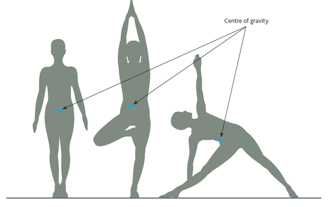
The point moves when the body does — and it does not have to stay
inside the body at all.
Angular Kinetics 2
Is it really 55 to 57% of standing height?
Angular Kinetics 2
Where it sits, and why the midline
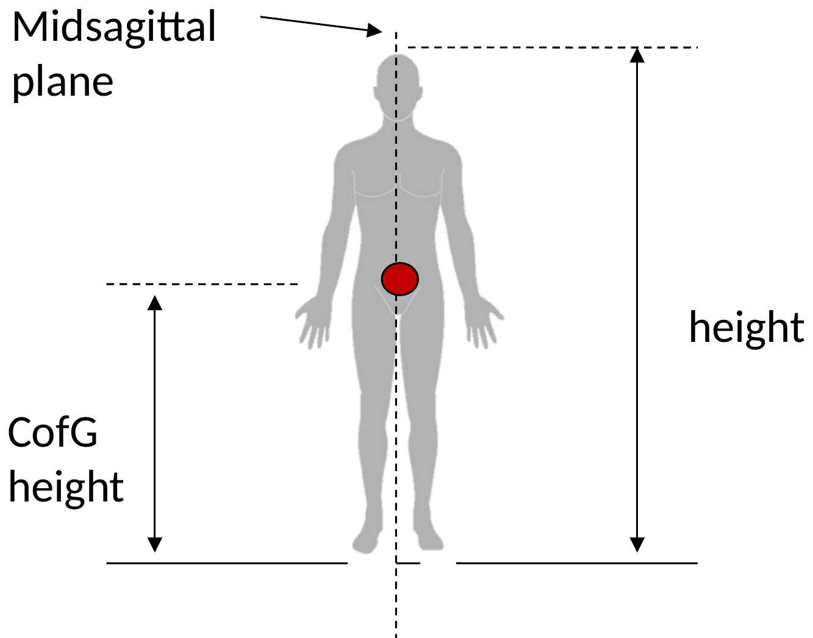
In the anatomical position the centre of gravity is
55–57% of standing height — a little above the navel, roughly
at the level of the second sacral vertebra.
Because the body is close to symmetrical left and right, it lies in the
midsagittal plane, the plane that divides the body into left and right
halves.
Symmetry is doing the work in that second sentence, not anatomy.
Any body whose mass is mirrored about a plane has its centre of gravity in that plane,
whatever shape it is. Break the symmetry — lift one arm, carry a bag — and
the point leaves the midline immediately.
Finding it
One sum, and the reason that sum is the right one
Angular Kinetics 2
The weighted average, and the balance point
Angular Kinetics 2
Why that sum is the balance point
Gravity pulls on every particle of a body. Each particle’s weight makes
a moment about any point you care to choose.
The centre of gravity is the one point for which all of those moments
cancel:
Σ mi g (ri − rcofg) = 0
Rearranging that, and cancelling the g that appears in every term:
rcofg = Σ(mi ri) ÷ Σmi
The g cancels, which is why the centre of gravity is in
the same place on the Moon — and why “centre of mass” and
“centre of gravity” give the same answer here.
So the whole weight of the body can be replaced by a single force
W = mg acting at that one point, and every moment it makes about every
other point comes out right.
That substitution is what makes the rest of the course possible. A free body
diagram of a limb draws one weight vector, not a cloud of them.
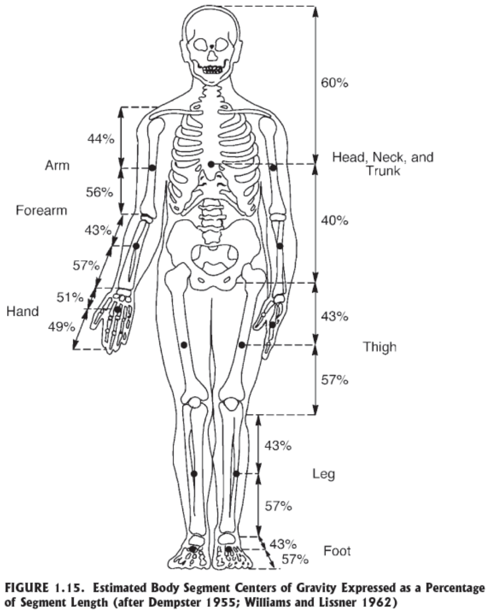
Angular Kinetics 2
Two dimensions is the same sum, twice
Where the numbers come from
Segment masses and segment centres of gravity, and the four ways
anyone has ever measured them
Angular Kinetics 2
Segment centre of gravity
To find the centre of gravity of a whole body you need the mass and
the centre of gravity of every segment.
For a living person neither can be measured directly. Four routes have been
taken:
Reaction board — a plank, a knife edge and a scale;
Scanning — DEXA and MRI, which measure tissue directly.
The percentages on the figure are remarkably consistent:
the centre of gravity of most limb segments sits at about 43% of the
way from the proximal end. Limbs taper, so the mass is nearer the joint it hangs from.
Angular Kinetics 2
The anthropometry table, with a body in it
Angular Kinetics 2
The reaction board
Angular Kinetics 2
The same board, one segment at a time
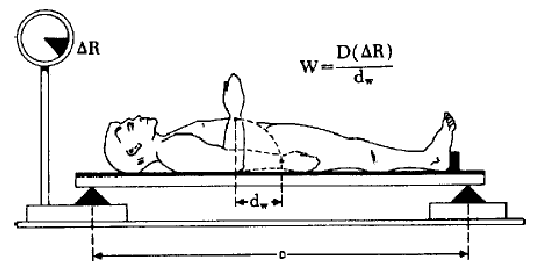
Move one segment a known distance, read the change in the scale, and the mass
of that segment follows:
W = D · ΔR ÷ dw
where D is the distance between the supports, dw
the distance the segment’s centre of mass moved, and ΔR the change in
the reading.
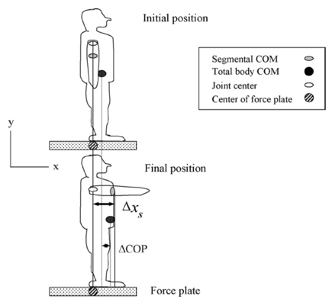
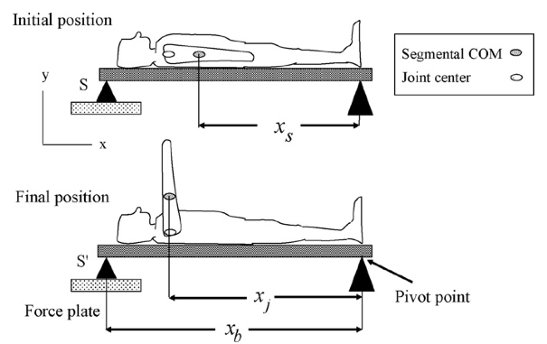
A force plate reads the same quantity continuously, so the measurement can be
made in several postures at once.
Angular Kinetics 2
Cadaver dissection
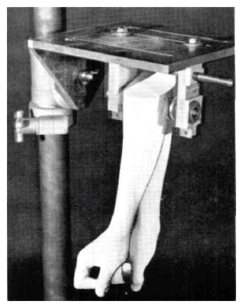
Segment a cadaver at the joints, weigh each piece, balance it to find its
centre of gravity, and swing it as a pendulum to find its moment of inertia.
It is the only method that measures all three directly, and almost every
number in the table traces back to it.
Dempster’s 1955 sample was eight elderly male
cadavers. Those eight people are the source of the segment masses used for every
subject in most laboratories today — children, athletes, women, amputees. The table
is the best we have and it is not a measurement of the person in front of you.
Angular Kinetics 2
Photogrammetry
Photograph the body in two planes. Measure each segment’s length, width
and depth from the photographs.
Treat the segment as a stack of elliptical cylinders, which
gives a volume. Multiply by an assumed density and you have a mass, a
centre of gravity and a moment of inertia.
The density is the catch. It is taken from the same cadaver
work the method was meant to replace — the density column is the last one in
Winter’s table. The geometry is the subject’s; the density is still
Dempster’s.
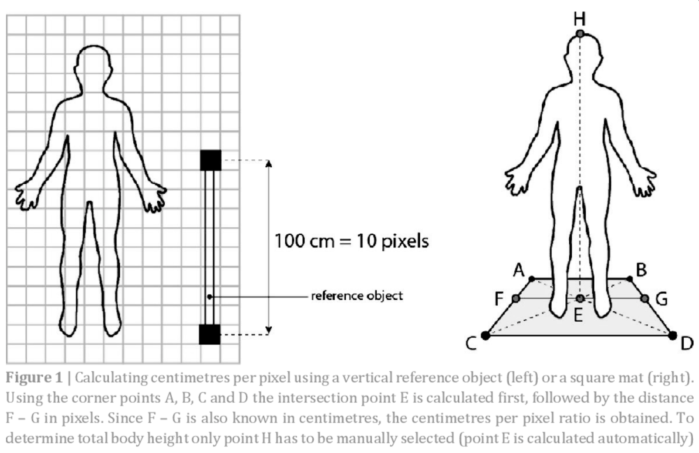
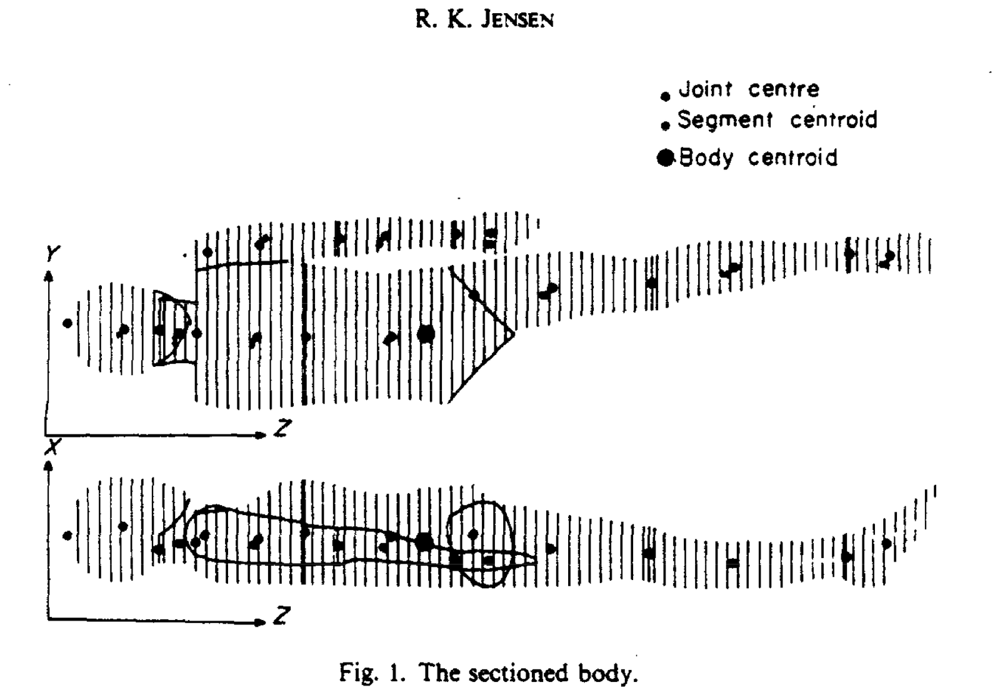
Angular Kinetics 2
Photogrammetry, done properly
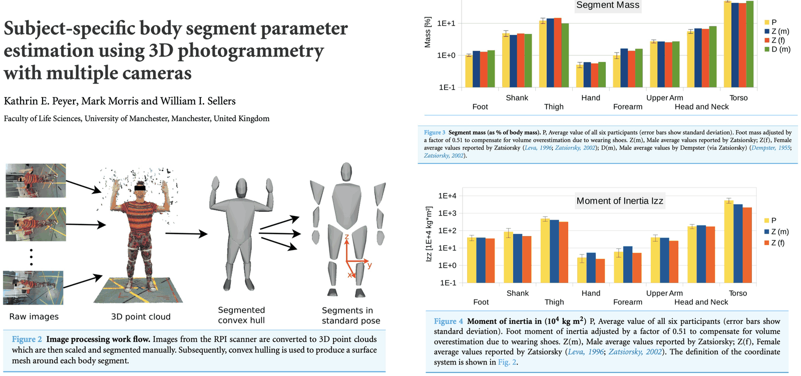
Many cameras rather than two, and a 3D point cloud rather than a pair of
silhouettes.
The hull is segmented and each segment’s volume taken directly — no elliptical
assumption at all.
The bar charts are the point: these masses and moments of inertia against the published
values, per subject. Mostly close. Not always.
Angular Kinetics 2
DEXA
Dual-energy X-ray absorptiometry passes a high and a low energy
beam through the body. Different tissues attenuate the two beams by different
amounts, so bone, lean tissue and fat can be separated.
The output is a map of mass per unit area. Draw a boundary around a segment
and its mass follows by summing — no density assumption and no geometric model.
It is a projection, so what comes out is mass per unit
area of a two-dimensional image. Moments of inertia still need an assumption about the
third dimension.
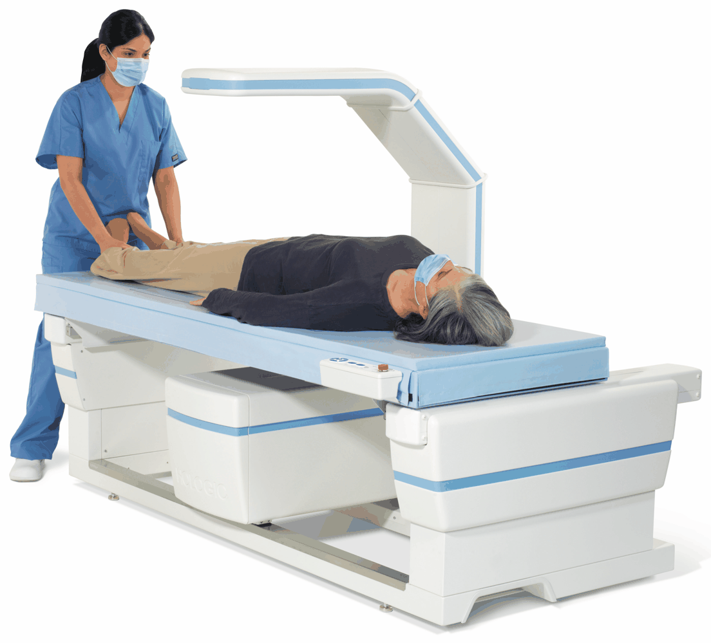
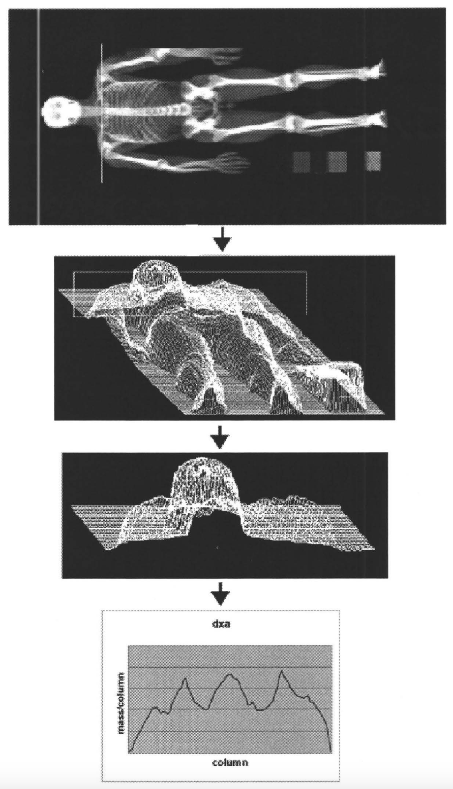
Angular Kinetics 2
MRI
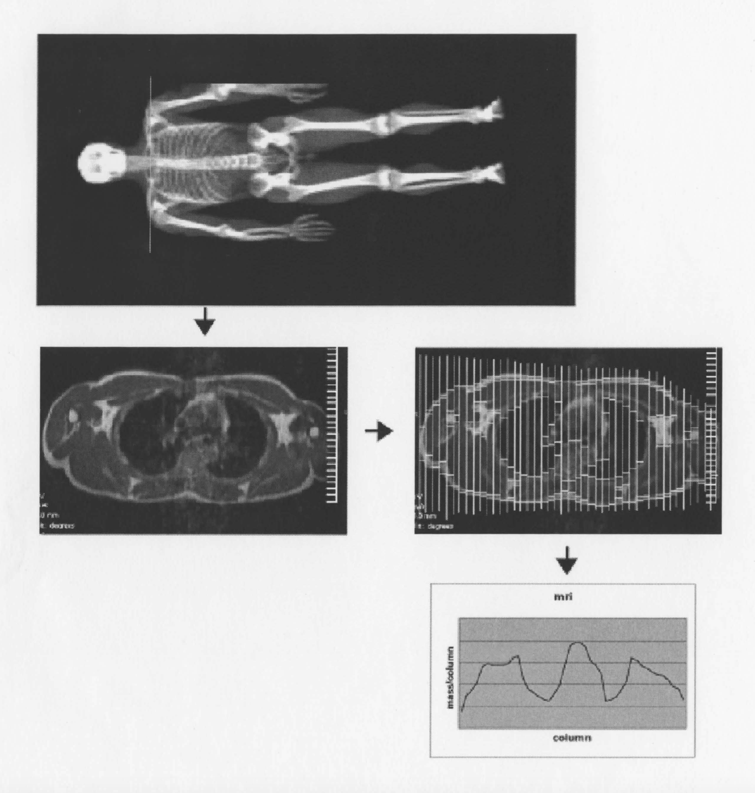
MRI uses strong magnetic fields and radio waves rather than ionising
radiation, and images slice by slice.
Because the slices are genuinely three-dimensional, both the centre of
gravity and the moment of inertia of a segment can be computed directly
from the images, with no geometric model and no assumed density.
This is the only method on the list that measures everything the
table contains, for the actual person. It is also the one nobody can afford to run on a
hundred subjects, which is why the 1955 table is still in use.
Angular Kinetics 2
An elliptical model, validated against DEXA
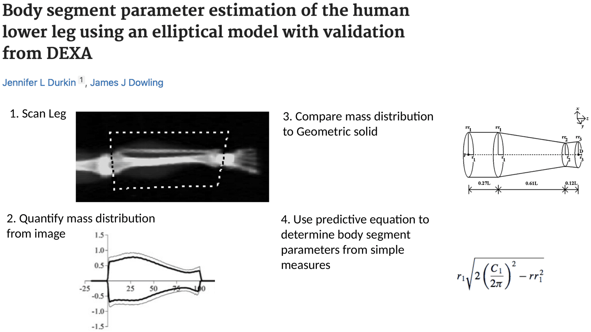
Scan the segment, get the real mass distribution, then ask what simple
solid reproduces it.
Fit a predictive equation so that a future subject needs only a tape measure, not a
scanner.
This is how a method that costs a thousand dollars a subject becomes a method that costs
nothing — once.
A body that keeps changing shape
Every limb movement moves the whole
Angular Kinetics 2
Move a limb, move the whole
Angular Kinetics 2
Why it moves, in one sentence
Lifting the left arm does not change how much you weigh. It changes the
moment arm of the arm’s weight about the midline.
The arm’s weight now makes a larger moment to the left than before, and
the only way for the moments to balance again is for the centre of gravity to move
toward it.
Δrcofg = mlimb Δrlimb ÷ Σm
Read that as a rule of thumb: the whole body moves by the
fraction of body mass that moved, times how far it went. An arm is about 5% of you, so
moving it 40 cm moves your centre of gravity about 2 cm.
The general rule, from his slide:
the centre of gravity shifts in the direction of the limb that
moved;
how far depends on the mass of that limb and the distance
it moved — that is, on the torque it caused.
And the consequence that matters for everything after this lecture: because
the body changes shape constantly while walking, running or jumping, the centre of gravity
is a moving target, not a landmark.
Centre of gravity, centre of pressure
Two points that are easy to confuse and are never the same
Angular Kinetics 2
Centre of pressure
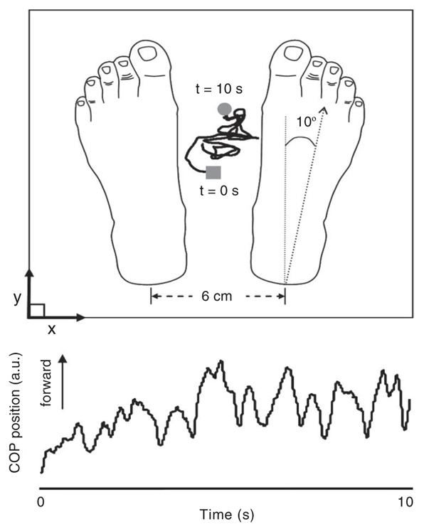
Centre of pressure — the point on the supporting
surface where the resultant vertical force can be taken to act.
It is a property of the contact, not of the body.
On one foot, it lies under that foot. On two, it lies somewhere between them,
according to how the weight is shared.
It can never leave the base of support. The centre of gravity can, and that is what
falling is.
A shift of the centre of pressure is used as an indirect measure
of postural sway — but it is measuring what the muscles are doing, not
where the body is.
Angular Kinetics 2
The force acts here, the body turns about there
Angular Kinetics 2
Quiet standing
Stand still and the centre of gravity drifts. The centre of pressure moves
around it, crossing from one side to the other, creating alternating
“righting” moments.
Winter’s record is the classic demonstration: the two traces on one
axis, over seven seconds.
The centre-of-pressure trace has a higher frequency
and a larger amplitude than the centre-of-gravity trace. That is not an
artefact and it is not noise. It is the control signal, and the next slide shows why it
has to be bigger.
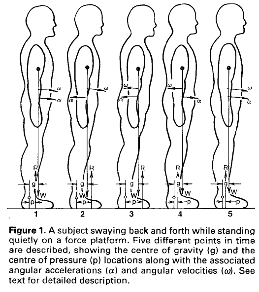
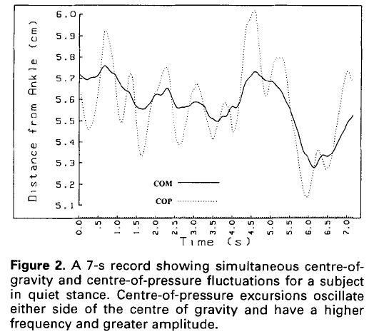
Angular Kinetics 2
Why the centre of pressure has to overshoot
Angular Kinetics 2
The base of support
The base of support is the area enclosed by the parts of the
body in contact with the ground, including the space between them.
Balance is one condition: keep the centre of gravity’s vertical
projection inside that area. The centre of pressure is the tool for doing
it, and it can only ever act within the base.
Feet apart — a wider base, more room before a correction is needed.
A cane — a much larger base, which is most of what a cane is for.
Up on the toes — a base a few centimetres long, which is why it is hard.
Forces through it, and forces that miss
Why anything spins at all
Angular Kinetics 2
Through the centre, and off it
Angular Kinetics 2
The two cases, stated
A force through the centre of gravity:
changes the linear motion of the object;
produces no moment about the centre of gravity, because
d⊥ = 0;
so there is no change in angular motion at all.
A force not through the centre of gravity:
changes the linear motion in exactly the same way;
and produces a moment M = Fd⊥;
so the object translates and rotates — and it rotates about its centre of
gravity.
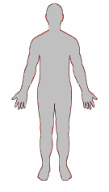
Newton’s second law in its two forms, side by side:
F = ma never mentions where the force was applied, and
M = Iα is the only equation that does. That is the entire reason
a free object spins about its centre of gravity and nothing else.
An unconstrained body has no axle. The only point it can rotate
about is the one for which the weights balance — which is the point this whole
lecture has been about.
Angular Kinetics 2
Example 1 — a force at right angles
A 75 N force acts perpendicular to a post, 3 m from the axis at
O. Find the moment about O.
Magnitude. The force is already perpendicular, so the
moment arm is the distance given:
MO = F d⊥ = (75 N)(3 m) = 225 N·m
Direction. By the right-hand rule the moment vector points
orthogonally to the page, with a sense going into it — which in the usual
sign convention makes it negative.
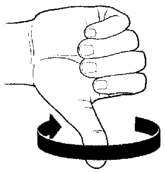
This is the same example as Angular Kinetics 1, slides 8 to 10,
and the deck for that lecture has it as an interactive figure. If it is fresh, move
through these four slides quickly.
Angular Kinetics 2
Example 2 — the same force, at 30°
Solution A — resolve the distance.
Find the perpendicular distance from the line of action to the axis:
d = (3 m)(cos 30°) = 2.6 m
MO = F d⊥ = (75 N)(2.6 m) = 195 N·m
Solution B — resolve the force.
Only the component perpendicular to the post contributes:
(75 N)(cos 30°) = 65 N
MO = (65 N)(3 m) = 195 N·m
Two routes, one answer. Resolve the distance or resolve
the force — never both, which is the commonest error on this question.
Angular Kinetics 2
What to take away
One sum does all of it. Σ(m·r) ÷ Σm locates the
centre of gravity in one dimension, and you run it once per axis for the others. There is no
separate two-dimensional formula.
It is the balance point because the moments cancel there — that is
not a second fact about it, it is the same fact rearranged.
Segment masses are not measured on your subject. They come from eight
elderly male cadavers by way of Dempster, and every centre-of-gravity and inverse-dynamics
result in this course inherits that.
The centre of gravity moves whenever the body changes shape, by the
fraction of body mass that moved times how far it went. The trunk usually wins.
Centre of pressure is not centre of gravity. One is a property of the
contact and can never leave the base of support; the other is a property of the body and
leaving the base is exactly what falling is.
The centre of pressure has to overshoot the centre of gravity, because it
is the only thing that can accelerate it. That is why its trace is the bigger, busier one.
A force through the centre of gravity translates; a force anywhere else translates
the same and rotates as well. F = ma does not care where you pushed. Only
M = Fd⊥ does.
Biomechanics (EPHE 341)
Angular Kinetics 2
Next up: angular kinetics 3 — moment of inertia, angular momentum and
how a diver changes her rate of spin without changing her angular momentum ·
Measured data: Lencioni et al., two subjects, standing and level walking ·
Segment parameters: Winter, Table 4.1, after Dempster